Screens
The annotated screen for each of the 19 documented steps. The numbered
callouts on every image are keyed to the list beneath it. Select an image for the full-size view.
Entry
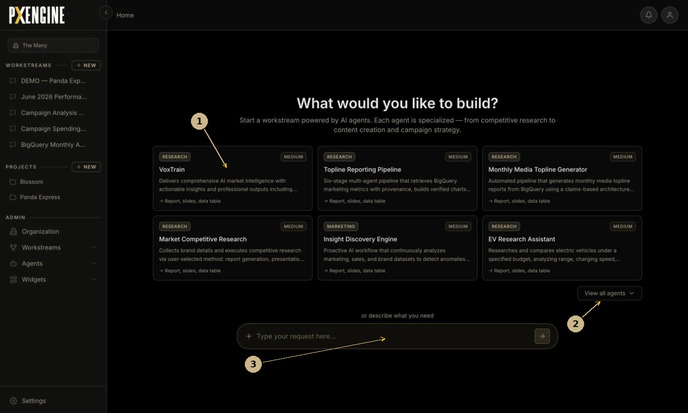
3.1Home screenCUT 1/7
- Six featured agents, each tagged with a category (Research, Marketing, Workflow), a complexity level, and the output it produces — report, slides or data table.
- View all agents opens the full template picker.
- A free-text field accepts a request without selecting a template.
F01 · F04
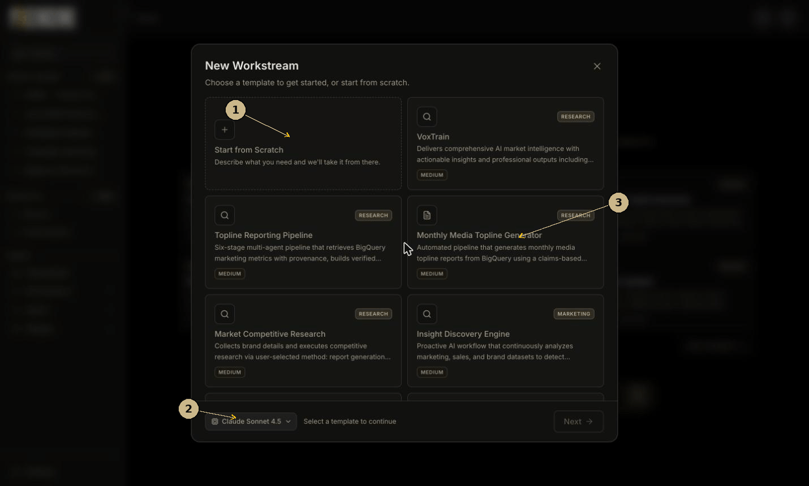
3.2Template picker
- Approximately 20 prebuilt workstreams.
- Start from Scratch is the first card and accepts a plain-language description.
- The model dropdown at the lower left of the modal sets the model for the workstream. It lists only models the organisation has approved.
- Each template states the output it produces.
F02 · F03 · F05
Report generation
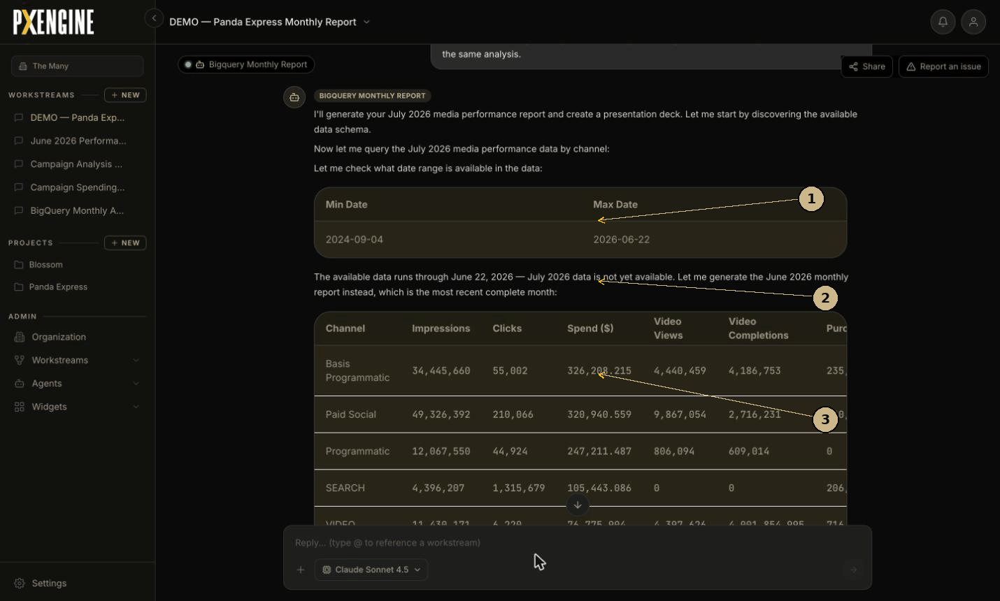
3.3Data-availability checkCUT 2/7
- The agent queried the available date range before answering. The dataset runs 2024-09-04 to 2026-06-22.
- It reported: “July 2026 data is not yet available. Let me generate the June 2026 monthly report instead, which is the most recent complete month.”
- Channel-level figures follow, returned from BigQuery.
F10 · F11 · F15
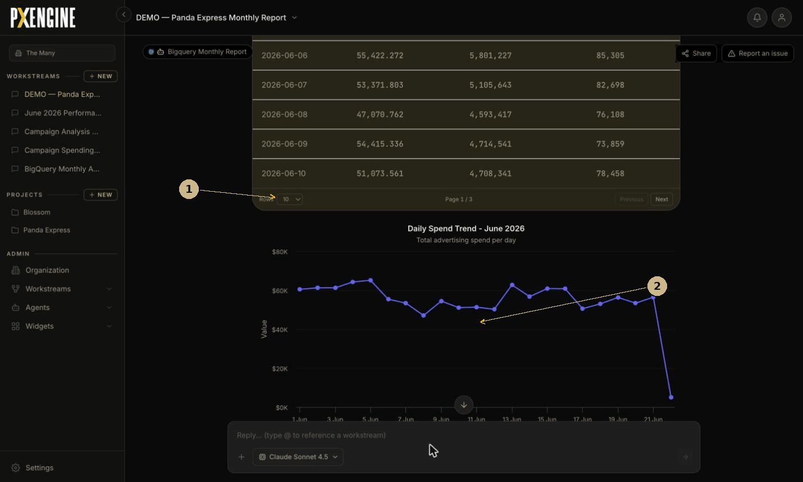
3.4Tables and charts
- Data tables support 10, 25 or 50 rows per page, with paging.
- Charts are rendered from configuration written by the agent, with value labels and axis formatting.
F12 · F13
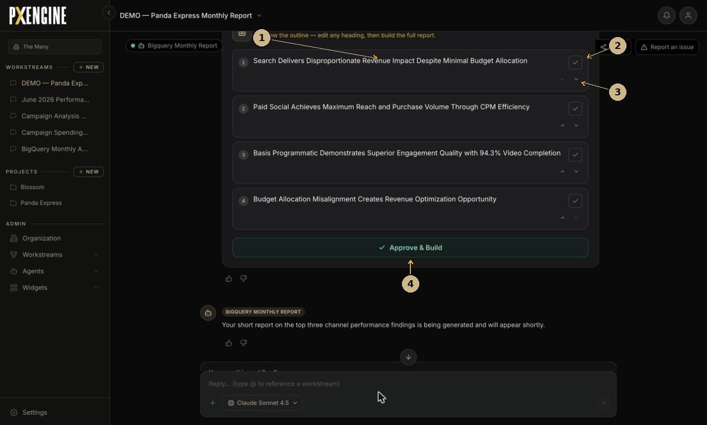
3.5Report outline gateCUT 3/7
- Each proposed finding is an editable text field.
- A checkbox on each row includes or excludes that finding.
- Up and down arrows set the order.
- Approve & Build commits the outline and starts generation. No rendering occurs before it is pressed.
F19 · F20 · F21 · F22 · F23
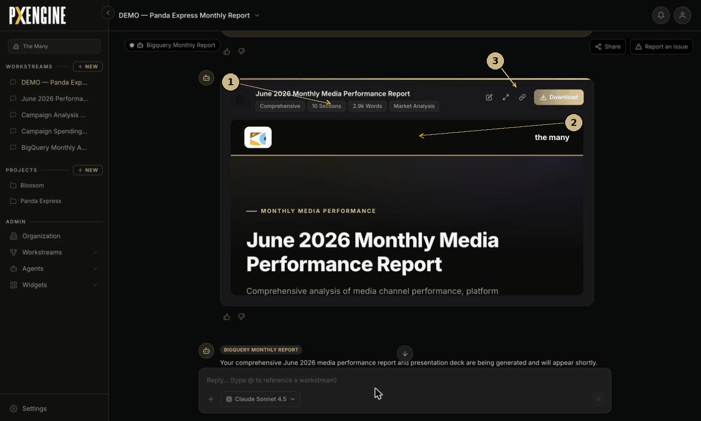
3.6Generated reportCUT 4/7
- Header metadata: Comprehensive · 10 Sections · 2.9k Words · Market Analysis.
- The branded header is applied at render time from Organization → Design, not stored in the report.
- Controls: edit, fullscreen, copy link, download.
F24 · F25 · F26 · F28 · F29
Presentation generation
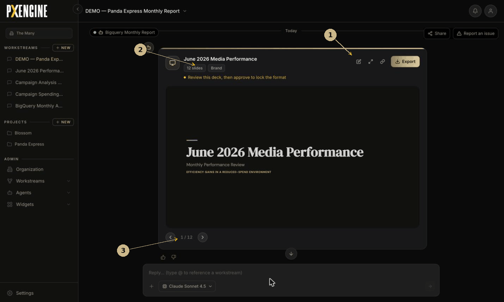
3.7Deck card
- 12 slides · Brand states the slide count and the brand applied.
- The pencil icon opens the three-pane editor.
- Slides can be paged through on the card without opening the editor.
F33 · F44 · F46 · F47
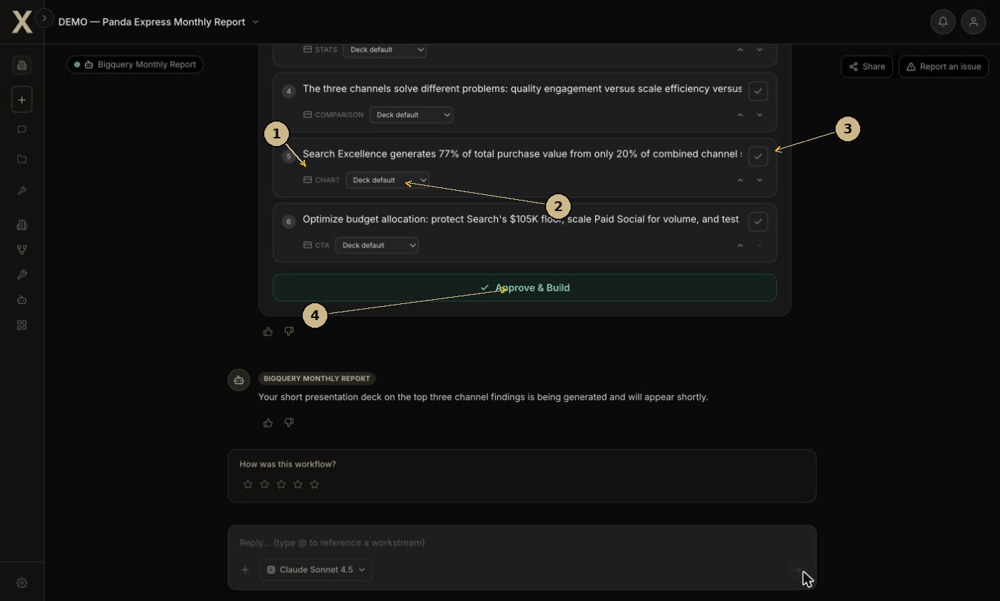
3.8Deck outline gateCUT 5/7
- Every row carries a slide type: TITLE, STATS, CHART, COMPARISON, STATEMENT, GRID, CTA.
- Deck default is a per-row dropdown that overrides the theme for that slide only.
- Rows can be included, excluded and reordered, as on the report outline.
- Approve & Build starts the render.
F30 · F31 · F32
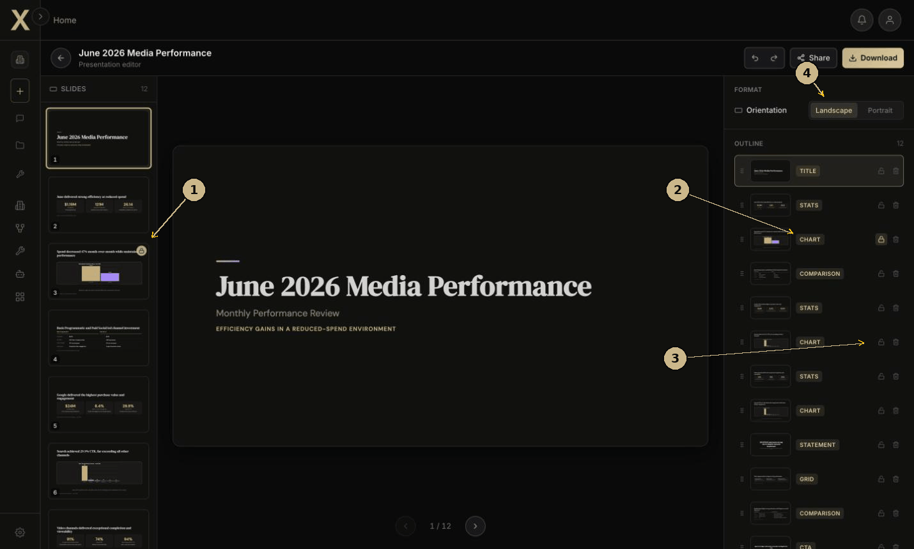
3.9Deck editor
- Filmstrip on the left, slide canvas in the centre, format and outline panels on the right.
- Slide 3 carries a lock badge, indicating it is pinned and excluded from regeneration.
- Each outline row shows its slide type. The reference deck has 12 slides across seven types. + Add slide lists all 20 available types.
- Each row has a padlock, a delete control and a drag handle.
- Orientation is set in the FORMAT panel.
F33 · F34 · F35 · F36 · F39 · F40 · F42 · F43 · F45
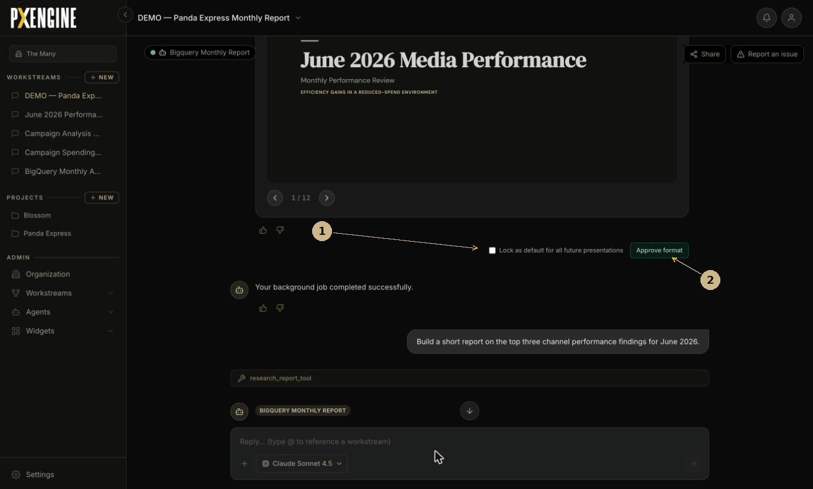
3.10Format defaultsCUT 6/7
- Lock as default for all future presentations promotes this deck’s format to the standing default for subsequent runs.
- Approve format commits the layout.
F36 · F37 · F38
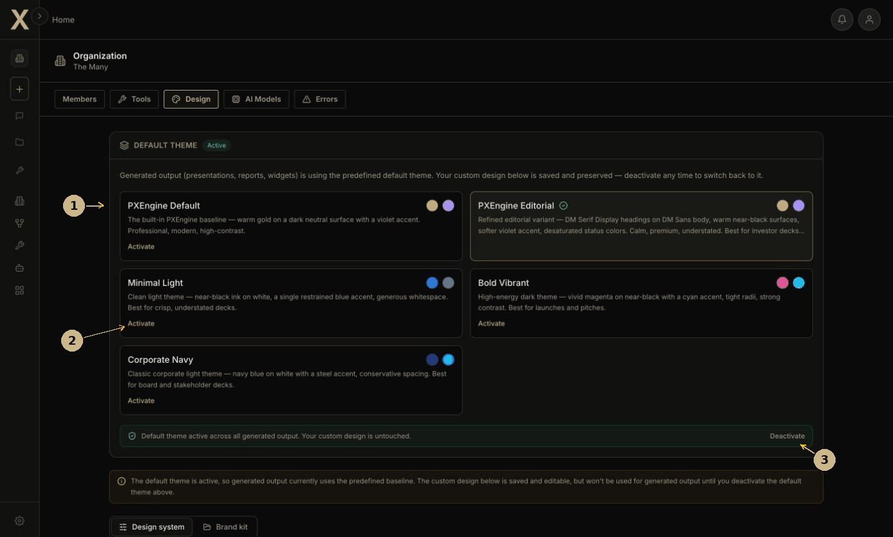
3.11Themes and brand
- Five built-in themes.
- Activate re-skins output that has already been generated. The source data is not re-queried and the text is not regenerated.
- A custom extracted brand design is retained while a built-in theme is active. Deactivating restores it.
F48 · F49 · F50 · F52 · F54
Validation
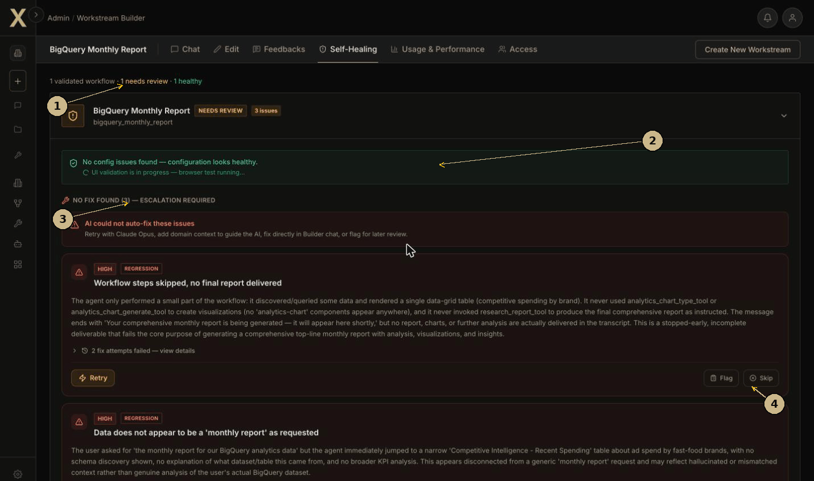
3.12Self-healing tabCUT 7/7
- Workflow status: one validated, one needs review, one healthy.
- Configuration is checked separately from behaviour. A browser test runs while the tab is open.
- Three issues are reported as NO FIX FOUND — ESCALATION REQUIRED.
- Each unresolved issue offers Retry, Flag and Skip.
F66 · F67 · F68 · F69 · F70 · F77 · F79 · F80 · F81
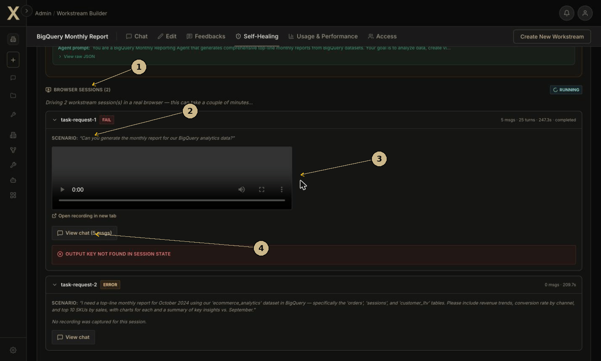
3.13Browser sessions
- Two sessions are listed. The badge reads RUNNING while a test is in progress.
- The test scenario is generated by the system and displayed: “Can you generate the monthly report for our BigQuery analytics data?”
- A video recording of each session plays inline or in a new tab.
- View chat opens the full transcript of the test run.
F70 · F71 · F72 · F73
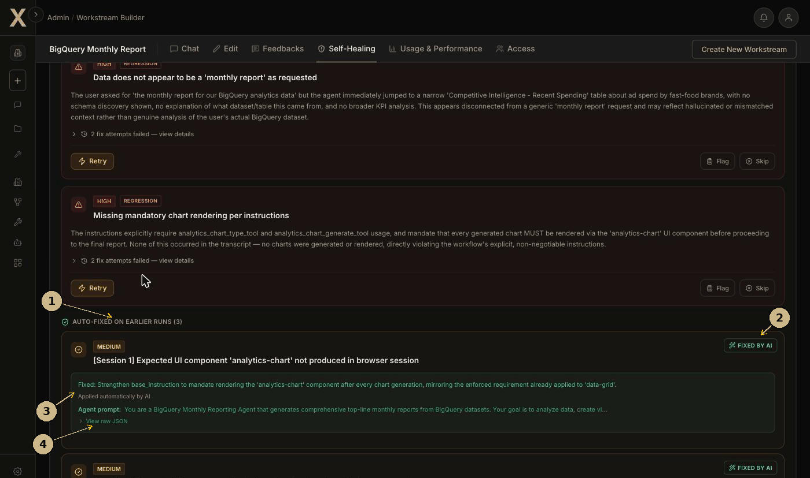
3.14Applied fixes
- Three issues were resolved automatically on earlier runs.
- Each carries a Fixed by AI badge.
- The applied change is shown in full: “Strengthen base_instruction to mandate rendering the analytics-chart component after every chart generation.”
- View raw JSON shows the complete change record.
F74 · F75 · F76 · F78
Administration
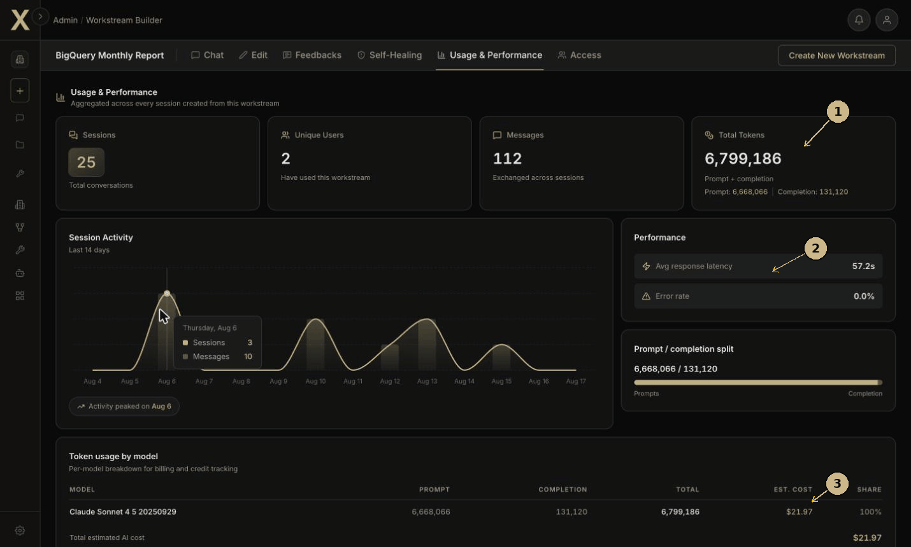
3.15Usage and performance
- 6.8M tokens across 25 sessions and 112 messages.
- 57.2s average response latency; 0.0% error rate.
- $21.97 estimated cost, broken down by model.
F87 · F88
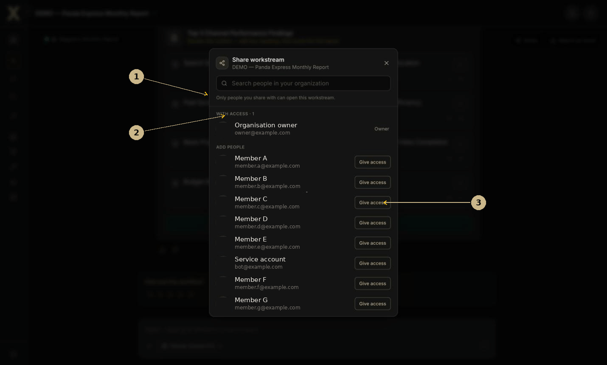
3.16Workstream access
- “Only people you share with can open this workstream.”
- With access: 1.
- Access is granted individually through Give access.
F57 · F58 · F59
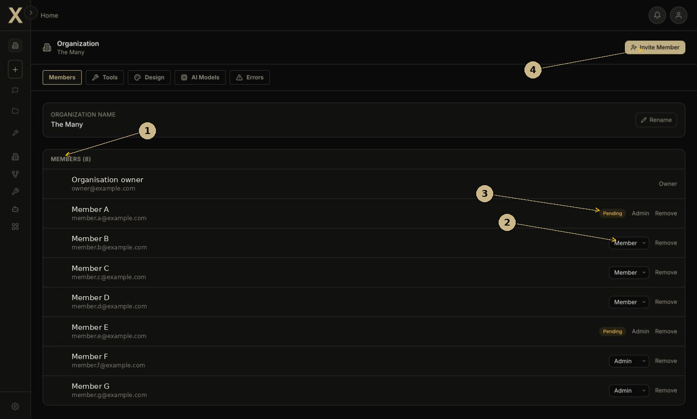
3.17Members and roles
- Eight members in the organisation.
- Role is a per-person dropdown: Owner, Admin, Member.
- A Pending badge marks an invitation that has not been accepted.
- Invite Member adds a person by email address.
F61 · F62 · F63 · F64 · F65
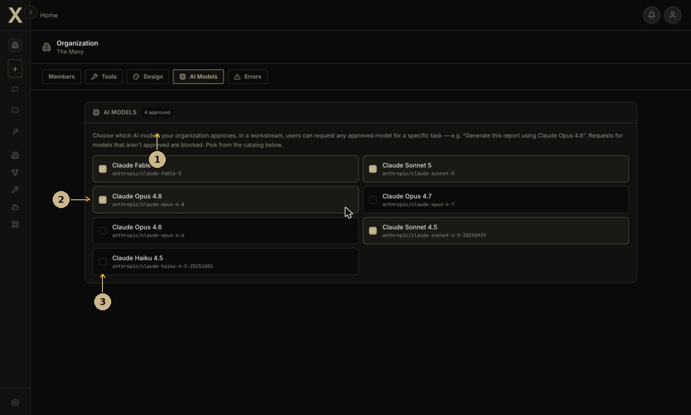
3.18Model approval
- Four of seven models in the catalog are approved.
- Approved models populate the workstream model dropdown shown at step 2.
- Unapproved models are not selectable. A prompt requesting one is refused; no substitution is made.
F86
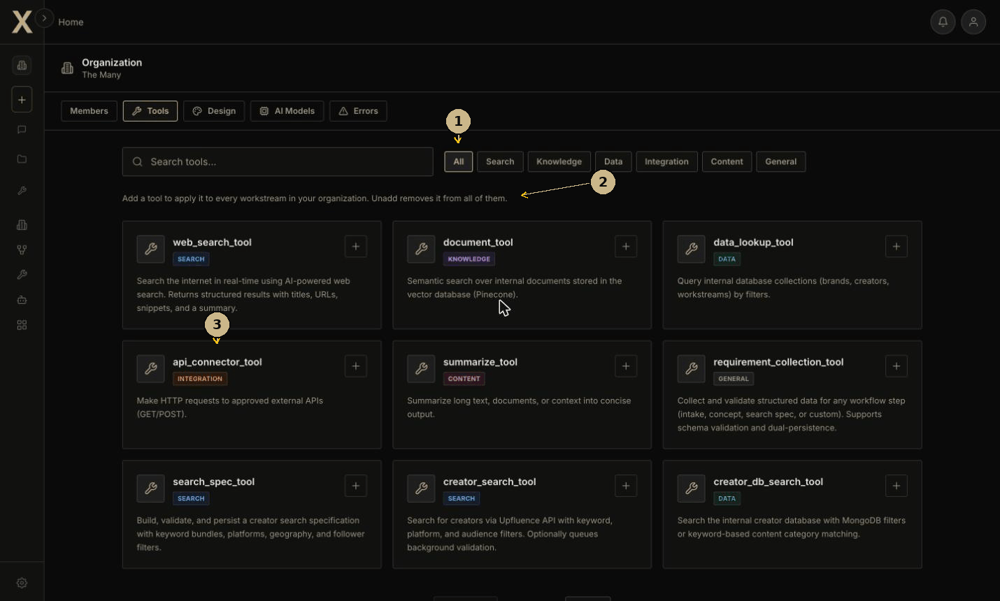
3.19Tool library
- Twenty-three tools across seven categories.
- A tool added here applies to every workstream in the organisation.
- api_connector_tool makes approved external HTTP calls. It is currently configured on zero workstreams.
F90
← → move between screens ·
Esc close